SPAR：以真实空间感知增强工业级生成式 POI 推荐
《SPAR: Enhancing Industrial-Scale Generative POI Recommendation via Real-World Spatial Perception》研究的是地图与本地生活服务中的下一 POI 生成。论文由高德（AMAP, Alibaba Group）团队主导，香港中文大学（深圳）参与合作，作者为 Fangye Wang、Yunjin Gu、Haowen Lin、Yifang Yuan、Song Yang、Xiaojiang Zhou 和 Pengjie Wang。可核验的公开入口是 arXiv:2609.02062，首次提交日期为 2026 年 9 月 2 日；公开页面未给出独立代码或项目页。PDF 使用了未填充的 ACM 模板，因此其中的会议简称、2018 年日期、ISBN 与 DOI 占位符都不是已确认的发表信息，本文只把它作为 arXiv 预印本讨论。
SPAR 没有把“空间特征”当成向现有模型再加一列经纬度，而是沿生成式推荐的完整训练生命周期重做三处接口：用 SI-SID 让离散标识符本身带空间结构，用 MG-CPT 让语言模型学习 POI、道路和导航关系，再用 TV-SFT 在大规模行为微调时保存这份空间能力。论文给出的证据覆盖两个公开数据集和四个工业规模数据集，但全部是离线实验、离线空间认知评测与可视化案例，没有报告线上 A/B 实验。
现有生成式 POI 推荐主要在行为共现构成的兴趣空间里学习：经纬度既没有被可靠地写进语义 ID 的几何结构，城市道路、方向与可达性也没有在训练中得到学习和保存。因此模型可能生成语义上合理、行为上常见，却离用户实时位置很远甚至隔河难达的地点；即使继续预训练注入了空间知识，海量行为微调仍可能把它覆盖。
1. 背景和问题
1.1 从候选打分到生成 POI 标识符
下一 POI 推荐接收用户历史轨迹和当前查询、位置等实时上下文，预测用户随后会访问的地点。传统方法通常先构造候选集，再用 RNN、Transformer 或图模型对候选逐个打分；生成式推荐模型则为每个 POI 构造一串 Semantic ID（SID），让大模型像生成词元一样自回归生成目标 SID。TIGER、GNPR-SID、PLUM 等工作说明，分层 SID 可以把大规模物品空间压缩成树状或残差式离散空间，避免对全部候选做显式遍历，并让不同前缀承担不同粒度的相似性。
论文把任务写成：给定用户集合 \(\mathcal U\)、POI 集合 \(\mathcal P\)、用户 \(u\) 的逆时间序轨迹 \(T_u\) 与实时条件 \(\mathrm{con}_u\)，寻找条件概率最大的下一地点：
符号解释：\(p^*_{n+1}\) 是预测的下一 POI，\(u\) 是当前用户，\(T_u\) 包含其历史交互，\(\mathrm{con}_u\) 包含查询、当前位置和其他实时元数据。SPAR 实际解码的是 \(p^*_{n+1}\) 对应的四词元 SI-SID，而不是对所有 \(p\in\mathcal P\) 计算一遍判别分数。工业场景中的交互可以是导航、预订、订票或收藏，因此“下一次会去哪里”同时受长期偏好、当前意图和物理位置约束。
1.2 兴趣空间并不等于城市空间
已有 SID 往往先把名称、品类、地址甚至经纬度序列化为文本，再由编码器得到语义向量，随后执行 RQ-VAE 或 RQ-Kmeans。问题在于，数字 token 的距离不等于地理距离，“121.3”和“121.4”的文本相似性也不天然表达两点相隔多少公里；协同共现或对比损失仍主要来自用户行为，容易让两个相隔数十公里的同品牌门店得到近似标识。于是量化空间由方差更大的语义信号主导，地理信息只像一个弱正则项。对地图服务而言，这会出现很具体的失败：模型知道用户想吃某类食物，却把同品类、同品牌但远离当前位置的门店排在前面。
直线距离也不是完整答案。城市里有河流、高架、单行道和有限的桥隧入口；两个 POI 的球面距离很小，实际道路距离与通行时间仍可能很大。普通网页预训练很难让通用 LLM 精确记住某一城市的道路连通关系，而仅用 POI 描述做小规模 CPT 也学不到“从起点经哪些路能到终点”。SPAR 因而把空间知识分成三个层次：单个 POI/道路的基本属性，POI—POI 与 POI—道路的成对关系，以及由导航轨迹体现的城市级系统连接。这里的目标不是让模型背诵孤立坐标，而是让地点成为距离、方向、道路和移动流共同连接的节点。
1.3 三处断点必须同时处理
论文识别了生成式 POI 推荐链路中的三处断点。第一处在 tokenization：标识符应同时回答“它是什么”和“它在哪里”，否则后续模型没有稳定的空间载体。第二处在 cognition：即便 SID 前缀更接近地理划分，基础模型仍不会凭空获得道路网络、方向和可达性推理，需要专门的多粒度空间数据继续预训练。第三处在 adaptation：CPT 学到的能力可能被数量巨大的行为序列 SFT 覆盖，模型最终又退回只拟合共现的状态。
POI 推荐还有一个容易被平均准确率遮蔽的约束：错误地点不是普通内容推荐里的“兴趣稍弱”，而可能根本无法在当前时间和交通条件下到达。用户的实时位置与查询会随请求变化，同一个历史轨迹在午餐、通勤或异地出行时对应的可行集合并不相同；一个只记住长期共现的模型，即使离线命中了常去品类，也可能把概率分配给当前城区之外的门店。SPAR 没有显式建模实时路况和出行方式，却至少要求标识符、参数知识和微调过程都承认物理空间的存在。也正因为如此，论文后续不能只用 Recall 证明方法，而必须同时检查推荐距离、空间认知、冷启动和过河案例；这些证据分别对应“是否命中”“是否更近”“是否真的记住城市关系”和“直线距离是否掩盖道路障碍”。
这三处相互依赖。只有空间 SID 而没有 MG-CPT，模型得到的是“附近地点更可能共享前缀”的结构先验，却不知道过河是否需要绕行；只有 MG-CPT 而标识符缺乏空间连续性，空间知识难以稳定落到目标 token 上；完成两者后若直接全参数 SFT，空间能力仍可能遗忘。SPAR 的核心判断是：真实城市空间必须同时成为离散表示的几何基础、模型参数中的关系知识，以及行为适配时被显式保护的能力方向。 后续实验也围绕这三个层次分别设计消融，而不是只给一个总模型对比。
2. 方法
2.1 三阶段总体链路
SPAR 的输入从 POI 侧和行为侧分开进入系统。POI 侧先将名称、品类、地址等文本送入预训练文本编码器，并把经纬度送入显式的正弦空间编码器；两者融合后经三层 RQ-Kmeans 与一层消歧索引形成四词元 SI-SID。随后，带 SI-SID 的 POI、道路和导航数据被序列化为 25 类训练任务，对基础 LLM 做 MG-CPT，得到包含城市空间知识的参数 \(W_{MG\text{-}CPT}\)。最后，行为 prompt 由用户历史 SI-SID、查询和实时位置构成；TV-SFT 一边从基础权重全参数学习行为兴趣，一边以冻结任务向量保存 MG-CPT 的能力并用 LoRA 做有限调整。三阶段最终服务同一个目标：把“在哪里、怎样到达”的城市关系保留到四词元 SI-SID 的生成中，而部署推理只使用合并后的单模型权重。 原文总体框架把这条链路画成“表示—认知—适配”：SI-SID 同时作为空间任务和行为序列的词表单位，MG-CPT 让空间复杂度从属性、成对关系增加到导航系统，TV-SFT 则把行为分支与冻结空间方向分开；因此 SPAR-NoCPT、SPAR-FullSFT 与完整 SPAR 都能对应到明确的模块差异，而不是任意删层。
2.2 SI-SID：把坐标几何写进离散标识符
SI-SID 首先把经纬度正规化到 \([0,2\pi]\)。这一步不是把两个数字直接当成语言 token，而是把全球坐标范围变成适合周期函数处理的相位；同一城市内相同幅度的坐标变化因此能得到位置无关的响应。正规化定义为：
符号解释：\(\lambda\) 与 \(\phi\) 分别是原始经度和纬度，\(\hat\lambda\) 与 \(\hat\phi\) 是正规化后的角度。经度的平移与缩放保留了周期表征的接口，纬度则按其有效范围单独缩放；论文关心的是单城范围，因而不会遇到跨日期变更线的环绕歧义。
每个角度随后投影到指数间隔的频带。单一正弦只能表达一种尺度，多频带并行使编码器同时感知细小位置变化和较大城区跨度；频带的具体定义为：
符号解释：\(K\) 是频带数量，\(f_k\) 是第 \(k\) 个频率。高、低频带对坐标位移的响应速度不同，使同一个编码既能表达街区级变化，也能表达更平缓的城区级变化，而不必让一个标量承担所有空间尺度。
以经度为例，每个频率都配对使用正弦与余弦，既避免单一相位造成的歧义，也让两点特征内积能够化为只依赖坐标差的余弦和。完整 Fourier 特征写为：
符号解释：\(\gamma(\cdot)\) 是 \(2K\) 维正弦—余弦映射，纬度采用同样形式。任意两点的特征内积只依赖坐标差而非绝对位置；在单城位移远小于 \(\pi\) 的范围内，相似度随位移增大而下降。附录还给出 Lipschitz 上界，说明相近坐标不会在 Fourier 空间突然跳远。
经度和纬度各自编码后不能停留在固定 Fourier 基上，模型还需学习哪些频带最适合当前城市与 POI 密度。论文将两路特征拼接并送入两层 MLP，得到与语义向量可共同量化的表示：
符号解释：\(\mathbf e_{geo}\) 是学习后的空间向量，\(d_g\) 是其维度。MLP 可以学习不同频带的重要性；线性层与 ReLU 作为 Lipschitz 映射会保留连续性，但内积的严格单调性经过学习投影后只应视为经验性质，论文用 Figure 7 而非纯理论证明来检查这一点。
文本编码器给出 \(\mathbf e_{sem}\) 后，空间向量和语义向量的维度、范数都可能不同；若直接执行 K-means，范数较大的一路会不成比例地主导簇中心。SI-SID 因而先拼接，再做 \(L_2\) 归一化：
符号解释：\(\mathbf x\) 是位于单位超球面的融合表示；归一化避免语义向量与空间向量因尺度不同而让其中一路支配聚类，也让后续残差的欧氏距离与余弦几何更一致。需要注意，拼接并不保证二者权重天然均衡，实际平衡仍取决于编码维度和训练后的分布，论文主要通过层级可视化验证结果。
三层残差 K-means 依次量化融合向量。每一层只解释上一层尚未吸收的部分，使前缀先承担较粗结构、后续 token 再细化剩余差异；码本训练、最近中心分配和残差更新可统一写成：
符号解释：\(\mathcal C_\ell\) 是第 \(\ell\) 层包含 \(N_c\) 个中心的码本，\(\mathcal R_\ell\) 是上一层残差集合，\(c^*_\ell\) 是当前最近中心，\(r^{(\ell)}\) 是归一化后传给下一层的残差，\(\epsilon=10^{-8}\) 防止除零。第一层优先吸收融合表示中的最大结构，后续层逐渐解释残差。工业数据 \(N_c=512\)，NYC/TKY 为 32；前三个 token 来自码本，第四个是碰撞消歧索引，所以每个 POI 都有唯一的 \(\langle a^*,b^*,c^*,d^*\rangle\)。
2.3 MG-CPT：把城市从点集变为关系网络
SI-SID 只是空间知识的载体，MG-CPT 才负责把城市关系写入模型参数。其 25 个数据集按三层组织：Basic 层有 13 类任务，建立 SI-SID、坐标、名称、品类、行政区、地址以及道路类别、长度、车道与限速之间的映射；Relational 层有 9 类任务，覆盖附近 POI、距离、方向，以及提供/不提供坐标、选择题/开放题的组合；Systemic 层有 3 类导航任务，预测道路距离与时间、经过的道路序列、逐步导航指令。开放推理样本使用“先答案、后推导”的普通文本格式，没有专门 reasoning tag。
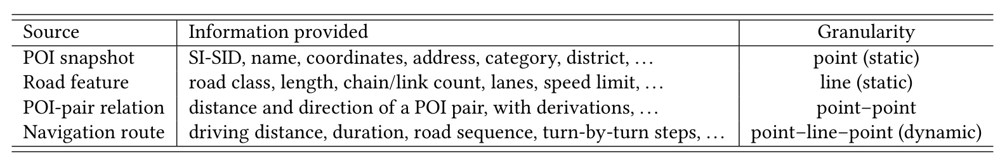
Table 6 揭示了“25 个任务”背后的四种原始证据。POI snapshot 是静态点，提供 SI-SID、名称、坐标、地址、品类和行政区；road feature 是静态线，提供道路等级、长度、链路数、车道和限速；POI-pair relation 是点—点关系，标注距离、方向及推导；navigation route 是动态的点—线—点结构，记录驾驶距离、时长、道路序列和逐步动作。前两类回答对象自身是什么，第三类回答两个地点如何相对，第四类回答真实道路系统怎样把它们连接起来。因此“多粒度”并非把同一坐标重复写成多种 prompt，而是让监督粒度从实体属性扩展到成对几何，再扩展到城市交通网络。表格还标出 point、line、point–point、point–line–point 四种粒度，说明任务设计与原始数据拓扑是一一对应的，而非只靠语言模板制造表面多样性。
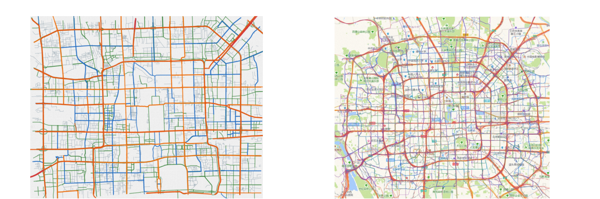
Figure 8 左图由道路特征渲染北京的静态骨架，能看出环路、放射线和局部路网，却不能告诉模型哪些起终点实际通过哪些通道连接；右图只聚合 2,000 条导航轨迹（训练使用约 50,000 条），高频移动走廊已经明显浮现。每条轨迹都把起点 POI、道路序列和终点 POI 串成一条边，大量轨迹叠加后形成动态的“虚拟街图”。这正是 MG-CPT 相对只学球面距离的增量：河对岸地点可能直线很近，但导航流会暴露桥隧入口和绕行成本。图中两幅地图属于同一原始 Figure 8，它们共同说明静态可连接性与真实移动分布不能互相替代。
四类数据被序列化为 instruction、input、output 三元组并混合做标准因果语言建模。作者没有增加专用空间分类头，而是让地点属性、方向、距离和路线都以语言序列监督同一主干，因而训练目标仍是下一 token 概率：
符号解释：\(x_{1:t}\) 是混合空间语料的 token 前缀，\(x_{t+1}\) 是下一个目标 token。这里没有额外空间图网络或专用分类头；能力被写进与推荐模型相同的 LLM 权重，因而随后能以任务向量形式抽取。开放距离题的标注还使用 Haversine 公式：
符号解释：\(\lambda\) 与 \(\varphi\) 是弧度制经纬度，\(\Delta\lambda\)、\(\Delta\varphi\) 是两点差，\(R=6371\) km，\(d\) 是球面直线距离。该监督教会模型距离计算，但道路可达性仍来自 navigation route；把二者分开很重要，因为论文并未声称一个球面公式能处理桥梁、隧道或单行规则。
2.4 TV-SFT：用冻结任务向量抵抗行为微调遗忘
普通做法若直接从 \(W_{MG\text{-}CPT}\) 全参数微调，大量行为样本会同时更新空间知识与兴趣知识，可能让刚学到的城市关系逐步退化。TV-SFT 不让这份能力继续随行为梯度任意漂移，而是先把 MG-CPT 带来的参数变化显式抽取为空间任务向量：
符号解释：\(W_{base}\) 是 CPT 前的基础模型，\(W_{MG\text{-}CPT}\) 是空间继续预训练后的模型，\(\tau_{MG\text{-}CPT}\) 是二者参数差。论文把这条方向视为“空间知识增量”，训练 TV-SFT 时保持冻结。这个解释依赖任务向量能较纯净地承载空间能力；若 MG-CPT 同时改变了通用语言能力或数据风格，差向量也会包含这些变化，这是该方法的一个边界。
冻结整个任务向量可以保存能力，却也可能限制它适应下游行为 prompt。空间分支因此只增加一个容量受控的低秩修正，让适配发生在较小子空间中而不重新开放全部空间参数：
符号解释：\(A\) 与 \(B\) 是 LoRA 的两个低秩因子，\(r\) 是秩，\(d_{lin}\) 是被适配线性层的维度。冻结任务向量负责“不要忘”，LoRA 则允许空间方向适应行为共现；如果完全不允许修正，保存下来的空间能力可能与下游 prompt 分布错位。
行为分支、冻结空间方向和低秩修正最终不是分别执行三次前向，而是在参数空间相加。一个显式融合系数控制空间能力在最终模型里的强度，最终权重为：
符号解释：\(W_{base}\) 在此阶段通过全参数 SFT 学习行为兴趣，\(\tau_{MG\text{-}CPT}\) 冻结，\(\Delta_{LoRA}\) 可训练，\(\alpha\) 控制空间分支融合强度，默认取 1。\(\alpha=0\) 退化为基础模型上的普通 Full-SFT；\(\alpha=1\) 恢复完整 MG-CPT 参数偏移并叠加低秩修正。训练完成后把三部分合并为一个推理模型，不需要双模型并行服务。
目标 SI-SID \(Q_t=\langle q_1,q_2,q_3,q_4\rangle\) 仍用负对数似然训练。四个 token 的前缀关系把由粗到细的码本结构带入解码，当前 token 同时依赖用户 prompt 与此前已经生成的标识符前缀：
符号解释：\(q_i\) 是四词元 SI-SID 的第 \(i\) 个 token，\(q_{<i}\) 是此前已生成 token，\(prompt\) 包含用户历史行为和实时上下文。训练时三类可学习量的职责不同：行为分支更新全参数，空间任务向量不更新，LoRA 只修正空间分支；推理时这些职责已经折叠到 \(W_{TV\text{-}SFT}\)，模型按前缀从粗粒度到细粒度完成生成。
3. 实验结果
3.1 数据、协议与对照方法
论文使用两组性质不同的数据，不能合并成一个“六城市公开基准”。公共数据只有 NYC 和 TKY，分别包含 2,083/2,293 名用户、5,135/7,873 个 POI 与 104,074/361,430 个实例；交互按时间排序后切为 80% 训练、10% 验证、10% 测试。工业数据来自 AMAP 的北京、上海、天津、浙江一个月轨迹与交互日志，每个历史—目标对形成训练实例，最后一天作为测试、此前日期用于训练。论文表示未来会发布四个工业数据集，但当前不能把“will release”写成已经开放。
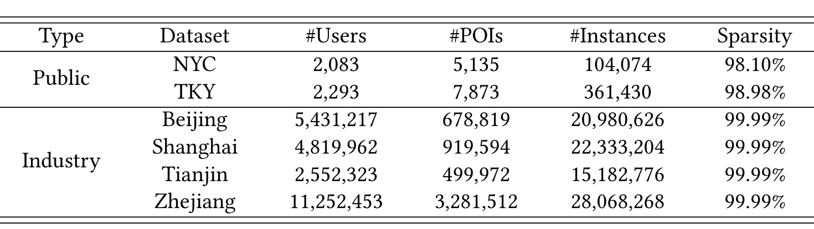
Table 1 的量级差异决定了结果该怎样读。两个公共集只有数千 POI，稀疏度约 98%；四个工业集有 49.9 万至 328.2 万 POI、255 万至 1,125 万用户、1,518 万至 2,807 万实例，表中稀疏度均显示 99.99%。浙江 POI 与用户规模最大，北京、上海的实例量也超过两千万。公共实验适合与丰富学术基线横向比较，工业实验则更能检验码本大小、长尾稀疏与生产分布噪声下的扩展性，但工业数据由作者平台自建，外部目前无法独立复算其采样和清洗过程。
指标采用 Recall@K、NDCG@K、MRR@K，\(K\in\{5,10,20\}\)：Recall 衡量目标是否进入前 K，NDCG 强调命中位置，MRR 看第一个正确结果的倒数排名。对照包含 SASRec、BERT4Rec、GRU4Rec、Caser、S3-Rec 等序列模型，TPG、Rotan 等 POI 模型，以及 TIGER、GNPR-SID、PLUM 等生成模型。主干为 Qwen3-0.6B/4B/8B，默认 4B；公共码本大小 32，工业码本 512，所有 GRM 都使用三层码本加一层消歧。论文报告全部训练使用 64 张 NVIDIA A100、batch size 32、学习率 \(2\times10^{-5}\)，说明实验并非低成本复现。
3.2 公共与工业数据主结果
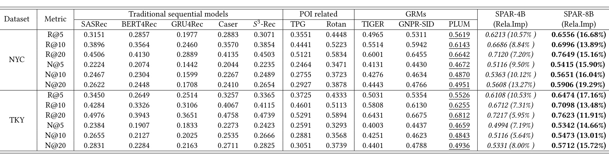
Table 2 只报告公共集的 Recall 与 NDCG，不含 MRR。SPAR-8B 在 NYC/TKY 的 12 个展示单元上都超过最强对照 PLUM-8B，相对提升为 11.91%—19.29%；例如 NYC R@5 从 0.5619 提到 0.6556，NYC N@20 从 0.4951 提到 0.5906，TKY R@5 从 0.5526 提到 0.6474。SPAR-4B 同样超过表中所有 8B baseline，说明这组结果不能只由参数规模解释。不过，表格把不同训练配方的生成模型放在一起，能支持“SPAR 配方优于这些对照”，不能单凭结果拆出数据、空间编码和任务向量各自贡献；组件归因要结合 Table 4。两个数据集在更深的 K 上仍维持增益，也说明改善不只集中在 Top-5 的一个阈值。
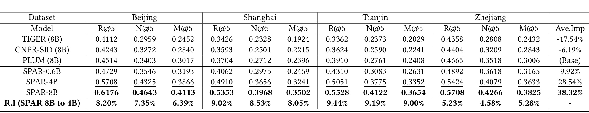
Table 3 把工业比较限制在 TIGER、GNPR-SID、PLUM 三个 8B GRM，并报告北京、上海、天津、浙江的 R@5/N@5/M@5。相对 PLUM，SPAR-0.6B、4B、8B 在 12 个单元上的平均相对提升分别为 9.92%、28.54%、38.32%；0.6B 版本的每个单元甚至都高于三种 8B baseline。8B 相对 4B 仍有 4.58%—9.44% 的逐指标增益，表明空间配方与模型扩展并非互斥。最需要守住的口径是：这里虽称 industrial-scale，仍是 AMAP 日志构造的离线测试集，论文没有给线上流量比例、显著性、护栏指标或 A/B 实验，因此不能改写为“已在线提升 38.32%”。
公共与工业结果合起来支持两点：空间知识对小模型也有效，且在极稀疏的大规模 POI 空间里增益更大；但二者的数据预处理、对照集合和展示指标不同，不能直接用 38.32% 与 11.91%—19.29% 比较“工业比公开提升多少”。更稳妥的判断是，在各自协议内 SPAR 均领先最强显示基线，而跨协议的增益差异可能同时来自数据规模、噪声、城市结构、码本大小和 baseline 适配程度。
3.3 三阶段增益、空间距离与冷启动
消融按累加顺序构造四个版本：TextOnlyGR 使用文本 SID 与 Full-SFT；SPAR-NoCPT 换成 SI-SID；SPAR-FullSFT 再加入 MG-CPT 但仍做普通全参数微调；完整 SPAR 最后换为 TV-SFT。这样的阶梯设计能分别看到表示、空间继续预训练与知识保存的边际变化。
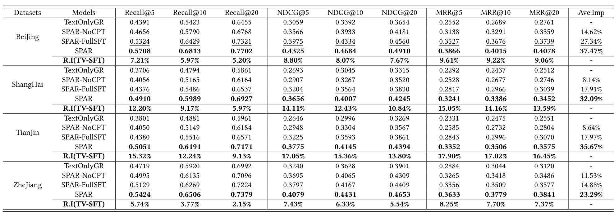
Table 4 覆盖四个数据集、每个九项 Recall/NDCG/MRR 指标。论文汇总称 TextOnlyGR 到 SPAR-NoCPT 平均提升 10.76%，说明坐标进入码本已经有独立作用；再到 SPAR-FullSFT 额外提升 15.38%，显示模型确实从 25 类任务学到超出标识符的空间关系；TV-SFT 相对 Full-SFT 的逐项提升为 2.15%—17.90%，天津最明显，R@5/N@5/M@5 分别为 15.32%/17.05%/17.90%。完整 SPAR 相对 TextOnlyGR 的各城市 Ave.Imp 为 23.29%—37.47%。这组离线顺序消融支持三阶段互补，但“超过简单相加的协同”仍会受训练非线性和累加顺序影响，不等于严格因果分解。
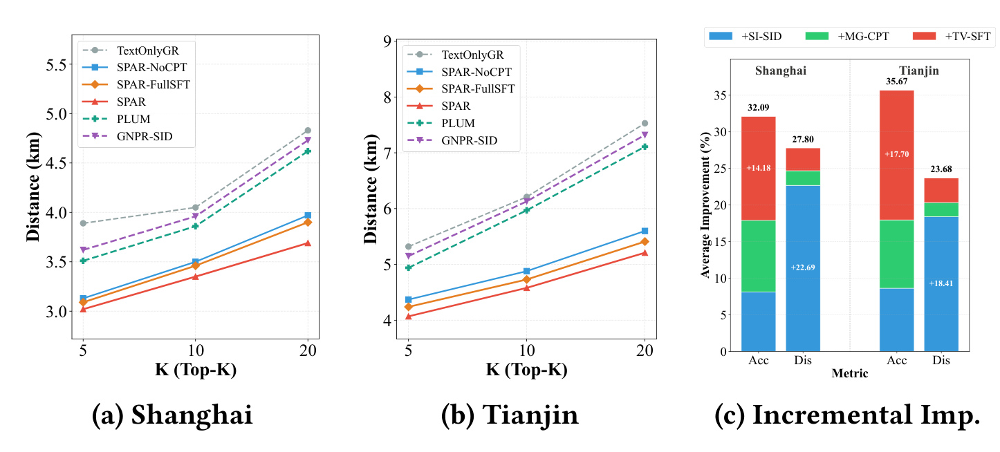
Figure 2(a)(b) 的横轴是 K=5/10/20，纵轴是推荐 POI 到用户实时位置的平均 Haversine 距离 Dis@K。上海 TextOnlyGR、GNPR-SID、PLUM 的 Dis@5 为 3.51—3.89 km，天津为 4.94—5.32 km；只换 SI-SID 的 SPAR-NoCPT 已降至 3.13/4.37 km。Figure 2(c) 再把相对 TextOnlyGR 的累计变化分阶段堆叠：上海/天津最终平均精度改善 32.09%/35.67%，距离累计下降 27.80%/23.68%。图的关键不是“越近越好”这一单一结论，而是 SI-SID 首先明显改变距离结构，MG-CPT 与 TV-SFT 则贡献更大的准确率增量，和三个模块的设计职责相符。
冷启动实验按历史序列长度划分：小于 8 为 cold-start，大于等于 16 为 warm-start；两组仍然提供查询词和实时位置，所以这不是完全没有上下文的新用户场景。
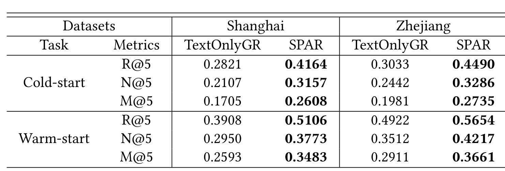
Table 5 显示 TextOnlyGR 从 warm 到 cold 时，上海 R@5 由 0.3908 降至 0.2821（下降 27.9%），浙江由 0.4922 降至 0.3033（下降 38.3%）。SPAR 在两种状态都更好，但 cold 相对 TextOnlyGR 的 R@5 增幅更大：上海 47.6%，浙江 48.0%；warm 增幅分别为 30.7% 与 14.9%。空间信号在行为历史不足时确实提供补偿，使 cold—warm 差距缩到 18.5%—20.6%。N@5 和 M@5 与 R@5 同向提高，表明收益不仅是目标刚好挤进列表末端，首个命中的位置质量也有改善。不过它依赖仍可获得实时位置与查询，因而不能外推到权限关闭、位置漂移或没有当前意图的场景。
3.4 表征结构与空间认知证据
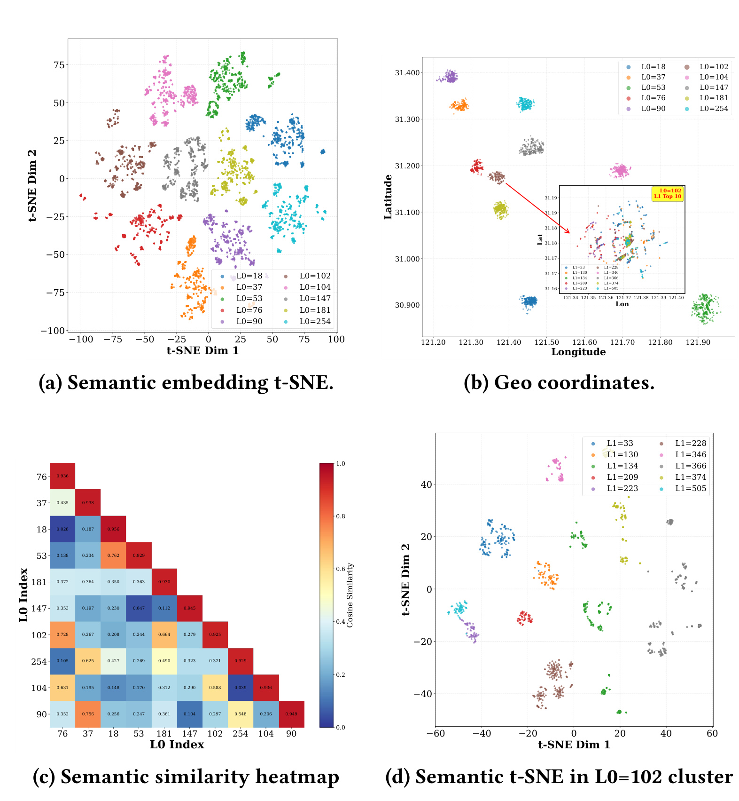
Figure 3 的四个视图共同检查 RQ-Kmeans 前缀是否学到预期层级。(a) 显示 top-10 L0 簇在语义 t-SNE 上各自较紧凑，(b) 显示不同 L0 在上海经纬度上占据相对分离区域，(c) 的相似度热图对角线多在约 0.925—0.956，而簇间普遍更低；这些结果说明第一层既有空间区分，也保留区域功能的语义一致性。(d) 聚焦 L0=102 后，十个 L1 子簇在语义空间继续分开，而 (b) 内嵌图显示它们地理上重叠。作者据此解释：L0 先吸收粗地理结构，残差中的语义差异由 L1 细化。t-SNE 只提供定性视图，但与相似度矩阵和地理散点相互印证，比单看二维投影更可靠。
MG-CPT 另建每城市 18 任务的空间认知基准，每项 2,000 道题，和 CPT 训练样本严格分离。任务前缀 B/R/S 对应基本属性、关系、系统导航；后缀 dis/dir/area/nearby/navi 对应能力；coord/no_coord 则比较显式给坐标与只能依赖参数记忆。12 项为选择题，另有 6 项开放生成。
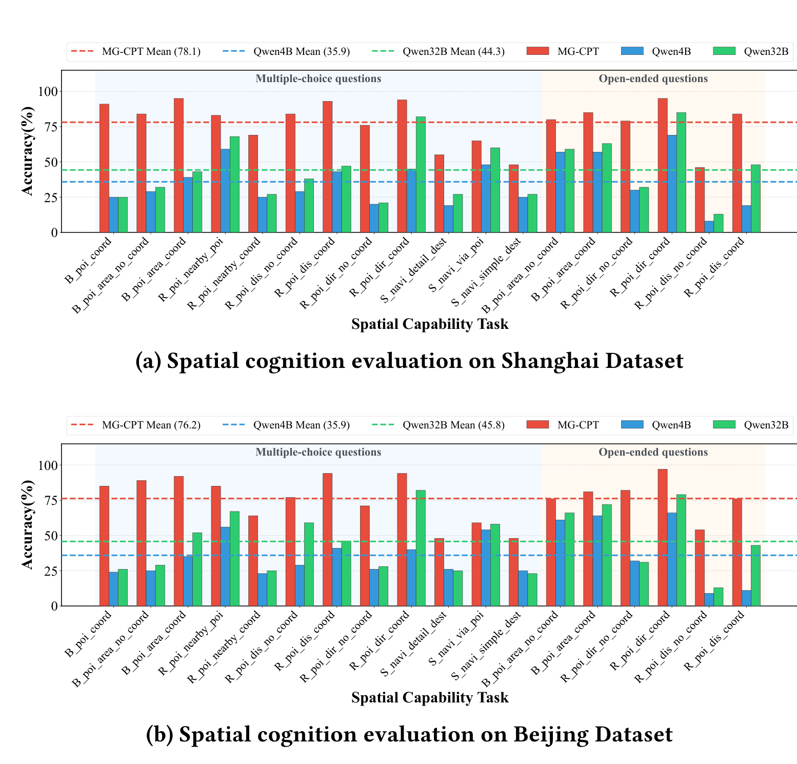
Figure 4 的两个面板都显示 MG-CPT（红色）在多数任务上显著高于 Qwen3-4B 与 Qwen3-32B。面板标注的上海均值为 78.1/35.9/44.3，北京为 76.2/35.9/45.8；正文另以跨城市汇总口径给出 4B 从 36.8 到 76.1、32B 为 45.3，应区分两种聚合而不要混写。无坐标方向题尤其能检验是否内化城市布局：正文举例称 MG-CPT 在方向 Choice/Open 上达到 76/79，而 Qwen3-32B 需要提供坐标才从 21 跳到 82。导航任务仍相对较难，约 48—65，说明道路系统知识只得到部分内化；这反而比所有任务饱和更符合难度梯度。
正弦编码的理论连续性作用在 Fourier 特征上，经过可学习 MLP 后还需要经验验证。附录在北京 116.2°—116.6°E、39.8°—40.1°N 的约 44 km×33 km 区域取 30×30 网格，共 900 个点。
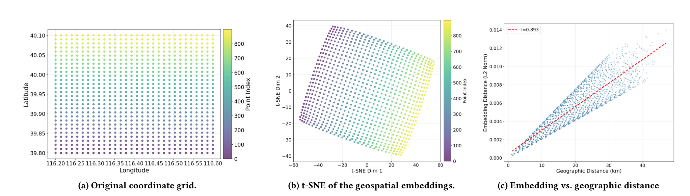
Figure 7(a) 是原坐标网格，(b) 是最终 \(\mathbf e_{geo}\) 的 t-SNE，仍呈规则、邻接关系相近的格点；(c) 比较 embedding distance 与 geographic distance，Pearson \(r=0.893\)，随地理距离近似单调增长。这一结果支持 MLP 没有破坏局部几何，但证据只来自单个北京区域与二维网格，Pearson 相关也不等于任意道路距离被等距保存，t-SNE 的二维形态还会受到投影算法影响。更准确的结论是：显式编码在所测单城尺度上保留了与地理距离高度相关的连续结构，为 RQ-Kmeans 产生相邻前缀提供了条件，而不是证明 SI-SID 对全球坐标都严格保持测地距离。与 Figure 3 的码本层级一起看，编码器几何和离散前缀得到前后两级验证。
3.5 可达性案例与 TV-SFT 超参数
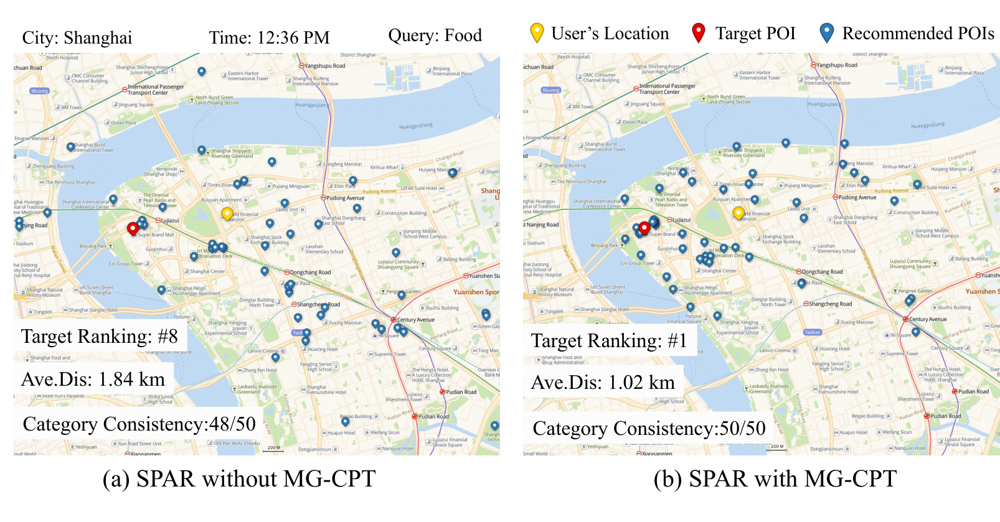
Figure 5 选择一个上海午间“Food”查询，比较前 50 个推荐。没有 MG-CPT 时，48/50 个候选和目标品类一致，说明语义并不差，但平均距离为 1.84 km、目标只排第 8，许多候选落在河对岸；加入 MG-CPT 后，候选更多沿用户同侧道路聚集，平均距离降到 1.02 km（下降 44.6%），品类一致性变为 50/50，目标升到第 1。因为两侧品类一致性接近，差异更像空间接地而非语义改进。红色目标点、黄色用户点和蓝色候选点的相对位置让“同品类但隔河”这一错误模式可直接观察，目标排名变化则把地图形态连接到生成列表质量。不过这是一个定性案例，能说明机制可能怎样工作，不能单独代表全城可达率，也没有与真实驾驶时间逐点对齐。
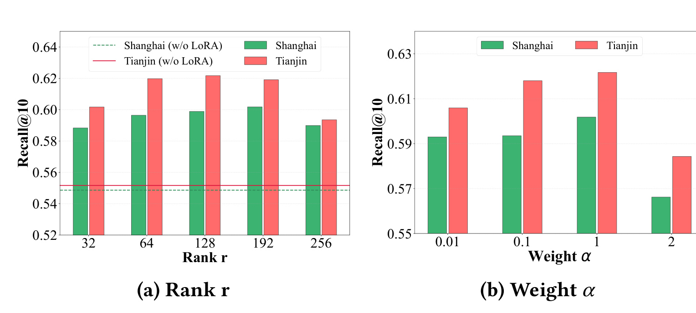
Figure 6(a) 测试 \(r\in\{32,64,128,192,256\}\)，上海最优约为 192、天津约为 128；所有带 LoRA 的柱都高于无 LoRA 水平线，且测试区间波动不大，说明低秩修正不是只在一个尖锐秩值才有效。(b) 测试 \(\alpha\in\{0.01,0.1,1,2\}\)，两城市都在 \(\alpha=1\) 取得峰值，过小会少用冻结空间方向，过大则压过行为适配。秩的相对稳定与 \(\alpha\) 的明显峰值共同表明：微调空间方向所需容量不敏感，但空间/兴趣两条参数方向的幅度平衡更关键；论文尚未展示跨更多城市、模型规模与不同位置噪声下是否仍取 1。
综合实验链可以看到，主结果回答“最终模型是否更准”，Table 4 回答“哪一阶段贡献增量”，Figure 2 与 Table 5 检查距离和稀疏历史，Figure 3/7 检查标识符几何，Figure 4 检查模型是否学到空间认知，Figure 5 则给出可达性直觉。多种证据方向一致，是论文的优点；其主要缺口仍是工业结果无法公开复算、没有在线实验、可达性只用距离与单例地图近似，而没有系统报告道路时间、跨河绕行率或用户满意度等直接指标。
4. 总结
4.1 我的判断与可迁移启发
SPAR 最值得保留的不是“再给推荐模型加地理特征”，而是三层对齐思路：先设计能承载结构的离散 token，再用与真实关系相匹配的数据培养能力，最后在下游适配时显式控制知识方向。对于生成式召回或统一生成—排序系统，这意味着 SID 设计不应只追求协同或语义可压缩性，还应把业务硬约束写进前缀结构；对于个性化 LLM，也可以把某类领域 CPT 带来的参数差当作锚点，在用户行为 SFT 中用低秩分支调整而不是整体覆盖。工程上还应借鉴其证据拆分：准确率、约束指标、知识评测与案例各回答不同问题，不能只靠一个总 Recall 宣称模型掌握了领域知识。
4.2 局限与风险
- 数据与复现边界。 四个 AMAP 数据集、每城市 25 个训练集和 18 项评测尚未在本次核验时公开，外部无法验证采样、去重、负例、轨迹过滤与隐私处理；64 张 A100 也使完整复现成本很高。
- 离线到在线的缺口。 工业规模不等于在线部署。论文没有 A/B 测试、延迟、吞吐、码本更新、增量 POI 冷启动或业务护栏指标，生成四 token 的线上收益与代价仍不清楚。
- 空间真值仍不完整。 SI-SID 的经纬度编码和 Dis@K 以几何距离为主，导航数据虽补充可达性，但主量化结果没有系统报告实际道路时长、交通状态、步行/驾车模式与障碍物约束；单个过河案例不能覆盖这些变化。
- 任务向量纯度假设。 \(W_{MG\text{-}CPT}-W_{base}\) 被解释为空间知识，但 CPT 也可能改变语言风格、模板偏好与通用推理。冻结整个差向量会一并保存无关变化，\(\alpha\) 在分布迁移时可能需要重新标定。
- 地域、隐私与公平性。 每城模型依赖细粒度 POI、道路和真实导航流，迁移到低数据城市、快速变化街区或海外坐标体系未被验证；轨迹数据还涉及位置隐私，热门流量可能进一步强化中心城区与高频商户。
4.3 后续跟进与复现建议
- 先复现 SI-SID：在公开 NYC/TKY 上固定同一编码器与主干，只比较文本 SID、坐标拼接 SID 和正弦 SI-SID，并同时测 Recall、Haversine 距离、前缀地理纯度与码本碰撞率。这样能确认 Figure 3/7 的结构是否稳定，而不必先承担完整 MG-CPT 成本。
- 为 MG-CPT 建一个小城市开源子集：至少包括 POI 属性、成对距离/方向和公开路网最短路三层，并严格按实体与路线切分训练/测试，避免同一 POI 事实以不同模板泄漏。除准确率外增加道路距离误差、路线可达率和跨障碍失败率。
- 对 TV-SFT 做参数方向审计：比较从 \(W_{MG\text{-}CPT}\) 直接 Full-SFT、冻结 task vector、TIES/其他模型合并、不同层选择性 task vector，并测 SFT 过程中 18 项空间能力随 step 的遗忘曲线；这比只看最终 Table 4 更能验证“保存知识”的因果链。
- 等代码与数据发布后重点核验工业协议、Figure 4 聚合口径和在线系统成本；若未来有线上实验，应要求同时给出导航/到店类主指标、推荐距离与时长护栏、延迟、长尾商户曝光以及位置权限缺失分桶，避免把离线 Recall 的提升直接等同于用户可达体验。
总体上，SPAR 已用相互补充的离线证据说明，POI 生成不能只在兴趣共现里优化，空间连续性、城市关系和知识保持都值得成为一等设计对象。它为地图推荐给出了一条结构完整、实验覆盖较宽的路线，但可复现性、在线收益、真实道路成本与隐私治理仍需后续公开材料和生产评测确认。